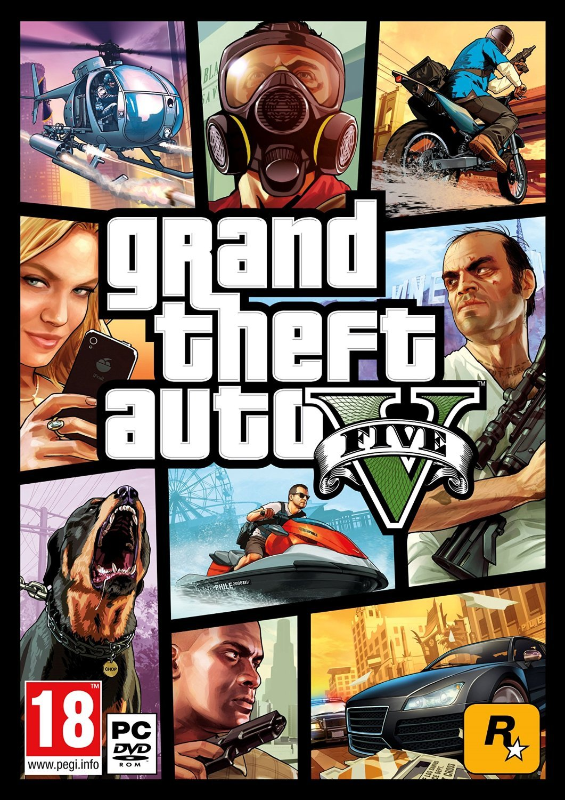
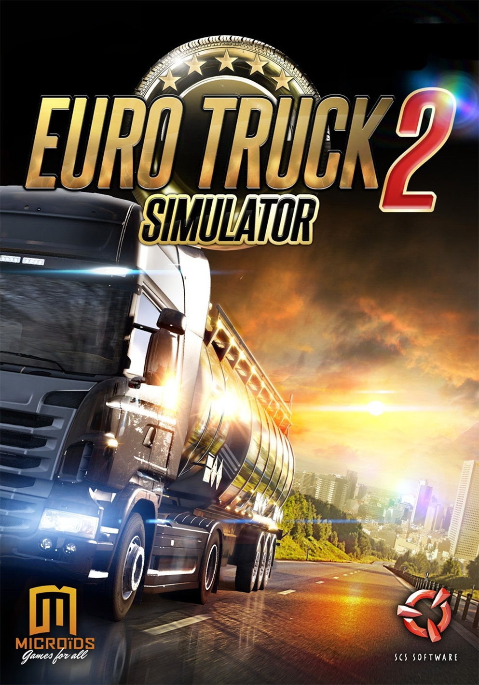
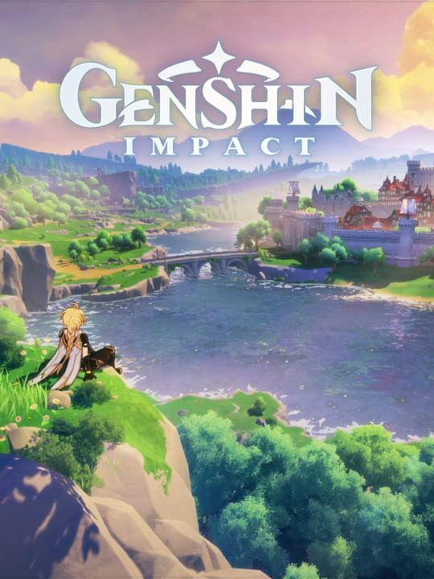
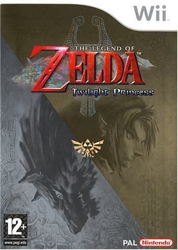

• Minecraft •

- Date de sortie : 2011
- Plateforme Utilisée : PC
- Type de jeu : bac à sable
- Mode de jeu : solo, mutlijouer
- Monde ouvert : OUI
- Site officiel : https://www.minecraft.net
C'est un jeux vidéo de type bac à sable, sorti en 2011. Depuis cette année-là, le jeu ne fait qu'évoluer, de versions en versions, parmi les contrées de cubes du jeu, dont la seule limite n'est que l'imagination du joueur. Possédant un nombre incalculable de mods, de packs de textures, le jeu permet de repousser
encore plus la limite de l'imagination. Encore aujourd'hui c'est un jeu beaucoup apprécié, ayant une communauté fidèle (et qui déteste les joueurs Fortnite qui critiquent le jeu de moche éwé)
► C'est à partir du collège, que j'ai découvert ce jeu, avec lequel j'ai grandi au fil des versions du jeu, avec mes amis, particulièrement. Et encore aujourd'hui, il n'est pas rare que l'on se retrouve sur l'un de nos monde bien conservé, où l'on continue d'ajouter
de plus en plus de constructions, d'imagination sans limites.
• Grand Theft Auto V •

- Date de sortie : 2013
- Plateforme Utilisée : PC
- Type de jeu : Action-Aventure
- Mode de jeu : solo, multijoueur
- Monde ouvert : OUI
- Site officiel : https://www.rockstargames.com/V/
Communément appelé simplement GTA V, à la grande réputation de jeu interdit aux moins de 18 ans, c'est surtout sur le online que nous nous concentrerons. Basé sur le même monde de jeu, Los Santos,
l'on peu enchainer les missions de bunker aux reventes de voitures volées, s'arrêter entre temps pour acheter de nouveaux vêtements ou bien faire une partie de golf. Et si l'envie vient à passer, pourquoi ne pas
profiter de se saouler au bar ou de jouer à Snake dans le bureau de PDG entouré d'armes et de billets laissés trainer par terre ? Il n'est pas rare que l'on parle des vices présents de ce jeu, mais il offre tout de même une certaines
diversité très intéressantes, à nous faire presque oublier le côté gangster tant retenu.
► C'est toujours avec mes amis que je joue, où l'on réalise quelques missions, profite d'une petite promenade en voiture sur l'autoroute à contresens, ou encore en voiture volante (que je suis fière d'avoir gagnée en tournant la roue de la fortune à en faire râler de jalousie les amis éwé).
C'est un jeu que l'on apprécie beaucoup, même après s'être faits poursuivre par un joueur casseur de bonbons en moto volante (ou Opressor MK2 pour les connaisseurs) ou en avion de chasse.
• Euro Truck Simulator 2 •

- Date de sortie : 2012
- Plateforme utilisée : PC
- Type de jeu : simulation
- Mode de jeu : solo , mutlijoueur (non intégré)
- Monde ouvert : OUI
- Site officiel : https://eurotrucksimulator2.com/
Comme son doux nom l'indique, c'est un simulateur, de camionneur plus précisemment. A l'aide d'un camion et d'une remorque, loués ou achetés, parcourez l'Europe pour faire prospérer l'économie Européenne !
Avec un multijoueur bourré de surprises par moments ou à la rencontre d'autres joueurs, ajoutez TruckersFM, radio créée spécialement pour le jeu par la communauté multijoueur, parcourez la France, l'Allemagne, le Royaume Unis, et bien plus !
► Encore et toujours avec mes amis. Oui. Quelques fois seuls, c'est un jeu que nous trouvons "Chill", apprécié dans les moments plutôt de détente, livraisons après livraisons, bugs après bugs, coincés sur la barrière de sécurité (pas tout le temps, rassurez-vous) avec mon (magnifique) camion rose avec remorque assortie.
• Genshin Impact •

- Date de sortie : 2020
- Plateforme utilisée : PC
- Type de jeu : Action-aventure-RPG
- Mode de jeu : solo, multijoueur
- Monde ouvert : OUI
- Site officiel : https://genshin.mihoyo.com
Un jeu qui a fait beaucoup parlé de lui à ses début, aux teints de RPG supposé devenir MMORPG (Massivement Multijouer Online Role Play Game), une histoire toujours en expension, ainsi que des graphismes ou un gameplay
inspiré de The Legend of Zelda : Breath of the Wild, vous atterissez en Teyvat, après avoir été séparé de votre frère ou soeur, suivant lequel vous décidez de choisir avant de vous réveiller aux côtés d'un personnage plus qu'agaçant.
► J'y joue seule, et je trouve que certes, ayant joué à Breath of The Wild dont il a été fortement inspiré en termes de gameplay, il est agréable de se promener dans son monde ouvert très beau, l'histoire est relativement prenante et unique. En d'autres mots, il possède un
bon potentiel, et bien que relativement récent, les mises à jour se poursuivent et ne font qu'améliorer le jeu (c'est le but en même temps...)
• The Legend of Zelda : Breath of the Wild •
Forcément, j'en ai parlé juste avant en titre de comparaison beaucoup critiquée pour Genshin Impact. Tant attendu en 2017, Zelda Breath of the Wild a conquis tout le monde (je l'avais même acheté en pré-commande aussi donc bon). Dans un monde ouvert, et un nouveau gameplay
qui sort de la routine appréciée des Zelda précédants, c'est dans un monde après cent ans que nous retrouvons un Hyrule désolé, ravagé par Ganon. Link se réveille tel la Belle aux Bois Dormants, et retrouve petit à petit ses souvenirs afin de comprendre ce qu'il s'est passé cent ans auparavant.
► D'une part, je n'ai pas fini de trouver ces 900 korogus. D'autre part, j'attendais avec impatiente, comme la plupart des gens, la sortie du jeu. Au niveau de l'histoire, elle est sympathique, mais niveau donjons, les sanctuaires sont cool, les casses têtes sont bons, mais les donjons principaux manquent vraiment, et concernant
Ganon, le boss final, on peut totalement améliorer sa tenue, rendre Link plus résistant, mais honnêtement cela ne sert pas à grand chose : j'ai littéralement battu Ganon avec un Link en caleçon. POur le gameplay, il est vraiment bien, il change forcémnent des précedants opus et donne une nouvelle aire à cette série de jeux iconique, qui continue
de traverser les âges.
• The Legend of Zelda : Twilight Princess •

- Date de sortie : 2006
- Plateforme utilisée : Wii puis Wii U
- Type de Jeu : Action-Aventure
- Mode de jeu : Solo
- Monde ouvert : NON
- Site officiel : pas trouvé
Ayant parlé du plus récent Zelda juste avant, je devais forcément parler d'un autre jeu de cette même série. Sorti initialement sur GameCube et Wii en 2006, à l'instar de Breath of The wild sorti à la fois sur Wii U et Switch en 2017, puis réadapté en HD sur Wii U, il est l'un des opus également les plus apprécié de la série. Dans un Hyrule plus "Dark" et plus mature,
le monde des ombres s'abat sur le royaume et Link, le héros choisi par les déesse, se doit (toujours) de sauver le monde. Pour cela, c'est avec l'aide d'une étrange créature, et sous la forme parfois d'un loup, qu'il devra réaliser sa quête.
► Mon Zelda préféré. Bien qu'il ne soit pas en monde ouvert, ce n'est vraiment pas le plus important. Avec des personnages attachants, une intrigue prenante, de bons donjons, un fil bien conduit, j'ai vraiment adoré ce jeu là.